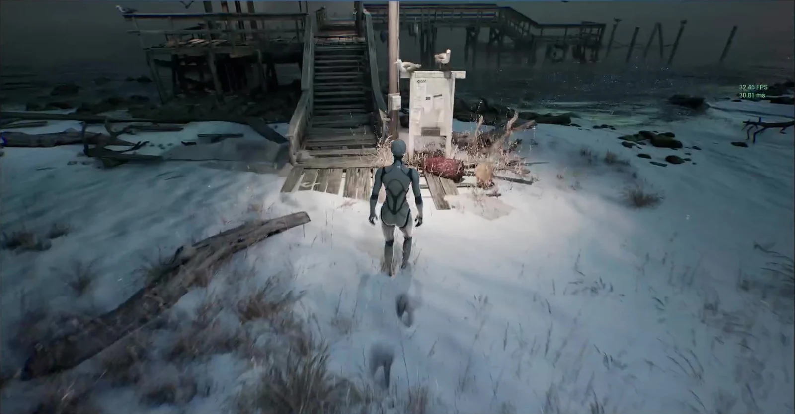

01 / Blueprint
파란 도면 위에 정리한 기술 포트폴리오
Lato + Noto Sans KR Blue #003488 / Paper #F2EAD6
Unreal Engine / Materials / Interaction
Built to
respond.
기술로 만드는 표면의 반응.
눈 위에 남는 발자국부터 반복 작업을 돕는 도구까지.
직접 만든 결과와 그 과정을 기록합니다.

눈 위에 남는 발자국RT / RVT / VHM ↗
분야 Technical art환경 Unreal Engine기록 2024–2026Work in progress
기술 기록
02 / White Gallery
여백과 이미지에 집중하는 담백한 작품집
Manrope + Noto Sans KR White #FFFFFF / Ink #202020
03 / Screening Room
환경 장면을 가장 먼저 보여주는 어두운 상영관
Space Grotesk + Noto Sans KR Night #151C24 / Ice #B9CCDC
Leave a trace.
눈 위에 남는 발자국.
가상의 표면이 움직임에 반응하는 순간.
More experiments
Materials & toolsBehind the scene
04 / Field Notes
명조 제목과 차분한 본문으로 읽는 기술 기록
Newsreader + Noto Serif KR Ivory #F8F7F2 / Olive #596147
Materials, motion & the making of things.
결과를 만들고,
이유를 기록합니다.
구현 노트
05 / Signal Studio
굵고 좁은 타이포그래피와 큰 이미지의 그래픽 구성
Barlow Condensed + Noto Sans KR Lilac #DCD1F2 / Violet #392B66
ART
THAT
REACTS.
움직임에 반응하는 표면.
그 반응을 만드는 기술.
눈 위에 남는 발자국↗
Selected experiments
Making of